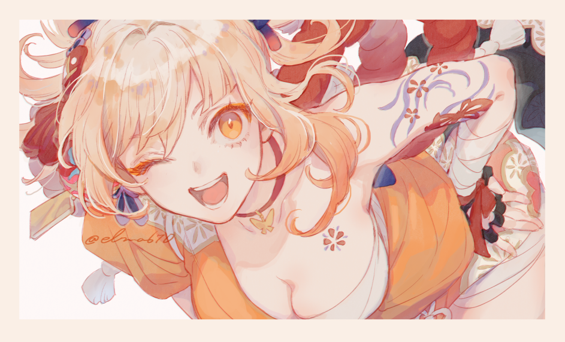
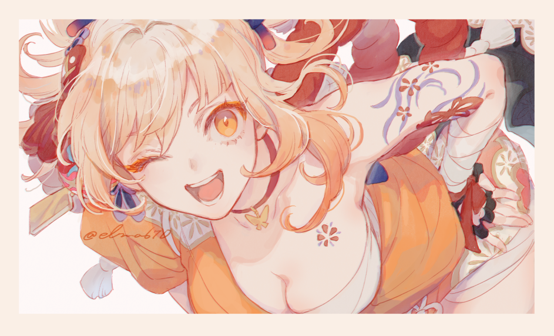

Lynx's website
This website is created by Lynx, an handsome student who has many wives including FuHua, Noelle, Keqing, Yoimiya and Lumine. Their photos are attached below:

 

喜欢吗，不给，都是我老婆:).
回到正题，这个主页目前还未完工，域名www.lynx1027.com属于Lynx本人并将用于本人的前端学习之路。
杨sir点一下这个